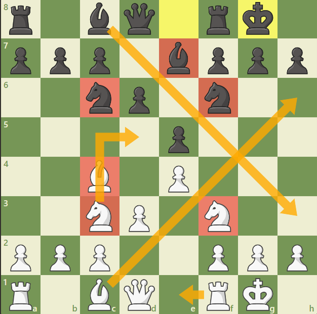
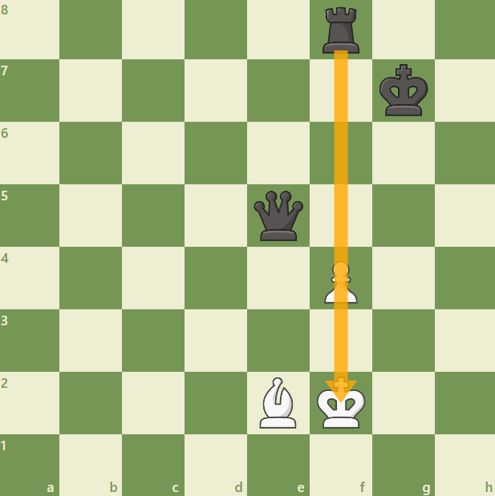
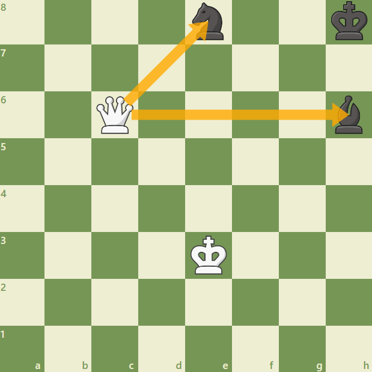

Que tengo que hacer para ser un buen jugador de ajedrez
Cabe destacar que con leer el siguiente contenido no se asegura conseguir un nivel muy alto de ajedrez, eso se logra con dedicacion diaria, lo que si se asegura es brindar algunos de los tantos recursos para poder elevar significativamente el nivel de ajedrez
Recursos del Ajedrez
Desarrollo
Clavadas
Ataque Doble
Desarrollo
El concepto de "desarrollo" se refiere a activar las piezas desde sus posiciones de partida, llevandolas a casillas en donde sean mas capaces de atacar las piezas contrarias o defender las propias

Clavadas
La clavada es una jugada que inmoviliza una pieza enemiga, porque tiene atras a su rey o bien porque su movimiento supondria una perdida de material. La clavada puede realizarse con la dama, la torre o el alfil.

En la imagen se puede ver que el peon no puede capturar la reina porque esta clavado por la torre
Ataque Doble
El ataque doble se basa en amenazar dos piezas rivales a la vez.
